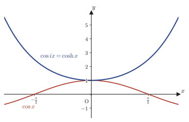

Chapter 21Complex Numbers and the Complex Plane
The equation $x^2+1=0$ has no solution among the real numbers. However, if we name “a number whose square is $-1$” with a new symbol $i$ (the imaginary unit), and then use real numbers $a,b$ to extend the range of numbers to the world of numbers of the form $z=a+bi$ (complex numbers), the solutions $x=\pm i$ appear for this equation as well. Up to this point, it is just as you learned in high school Mathematics II (a course in the Japanese high-school curriculum). In Part V, “Complex Analysis,” which begins with this chapter, we reinterpret these complex numbers not merely as “a tool for enlarging the set of solutions” but as points in the plane (or arrows from the origin), and we stand at the entrance to the geometry and analysis that unfold from there—complex analysis.
If we regard the complex number $z=a+bi$ as a point in the plane whose $x$-coordinate is $a$ and whose $y$-coordinate is $b$—that is, as a point in the complex plane (also called the Gaussian plane)—then the four arithmetic operations on complex numbers, which until then were merely algebraic computation rules, acquire a geometric meaning in terms of length, angle, and rotation. For example, we will confirm in this chapter that the operation of “multiplying two complex numbers” is in fact equivalent to the surprisingly simple operation of “multiplying the lengths (absolute values) and adding the angles (arguments).” Behind this fact lies Euler's formula $e^{i\theta}=\cos\theta+i\sin\theta$, which connects the exponential function and the trigonometric functions. It is a tool that appears everywhere in engineering, physics, and materials science—impedance in AC circuits, the description of waves and vibrations, the phase of the wave function in quantum mechanics, the Fourier transform (Chapter 30) and the Laplace transform (Chapter 31)—and one might call it the basic stamina of anyone in science and engineering. In this chapter, rather than accepting this formula as handed down from above, we derive it with our own hands, using the Maclaurin expansion learned in Chapter 4.
- Introduce the absolute value $|\alpha|=\sqrt{a^2+b^2}$ of a complex number as “the distance from the origin,” and prove basic properties such as $|\alpha|^2=\alpha\bar\alpha$ and $|\alpha|=|-\alpha|=|\bar\alpha|=|-\bar\alpha|$
- Introduce the polar form $z=r(\cos\theta+i\sin\theta)$ ($r=|z|$, $\theta=\arg z$) of a complex number as a decomposition in terms of unit vectors in the real-axis and imaginary-axis directions
- See that the product and quotient of numbers in polar form break down, by way of the addition formulas, into “the product and quotient of the absolute values” and “the sum and difference of the arguments”
- The proof of de Moivre's theorem $(\cos\theta+i\sin\theta)^n=\cos n\theta+i\sin n\theta$ by mathematical induction, and properties such as $|e^{i\theta}|=1$ and $\overline{e^{i\theta}}=e^{-i\theta}$
- The derivation of Euler's formula $e^{i\theta}=\cos\theta+i\sin\theta$ from the Maclaurin expansion (which also serves as a review of Chapter 4)
- That the $n$th roots of $1$ form the vertices of a regular $n$-gon in the complex plane, and the view of “multiplying by $i$ is rotating by 90°” as a rotation operator
- That the trigonometric functions $\cos\theta,\sin\theta$ and the hyperbolic functions $\cosh x,\sinh x$ are converted into each other by substituting imaginary numbers (for example, $\cos ix=\cosh x$)
- A method of expressing equations of lines and circles in the complex plane using only $z$ and its conjugate $\bar z$
Source notes: Yasuhide Mochizuki, Mathematics Notes: Complex Analysis, pp. 1–8.
21.1 Absolute Value and Complex Conjugates of Complex Numbers
As a first step in complex analysis, we begin with a brief review of the basic vocabulary of complex numbers that you learned in high school Mathematics II.
Definition 21.1: Complex numbers and complex conjugates (review)
A number whose square is $-1$ is called the imaginary unit and is denoted by $i$: $i^2=-1$. A number that can be written in the form $z=a+bi$ using real numbers $a,b$ is called a complex number, and the set of all complex numbers is denoted by $\C$. We call $a$ the real part of $z$ (also written $\operatorname{Re}z$) and $b$ the imaginary part of $z$ ($\operatorname{Im}z$). Furthermore, the complex number $\bar z=a-bi$, obtained by reversing only the sign of the imaginary part, is called the complex conjugate of $z$.
A complex number $z=a+bi$ can be made to correspond to the point $(a,b)$ on a plane whose horizontal axis ($x$-axis) is the real part $a$ and whose vertical axis ($y$-axis) is the imaginary part $b$. We call this plane the complex plane, the horizontal axis the real axis, and the vertical axis the imaginary axis. In the rest of this chapter, we draw complex numbers $\alpha,z$ as vectors (arrows) extending in the complex plane from the origin $O$ to the points $\alpha,z$.
21.1.1 The absolute value of a complex number — defined as a distance
Definition 21.2: Absolute value (modulus) of a complex number
Regard the complex number $\alpha=a+bi$ as the point $(a,b)$ in the complex plane. The distance from the origin $O(0,0)$ to the point $\alpha$ is called the absolute value or modulus of $\alpha$ and is denoted by $|\alpha|$.
Let us express this distance by a formula in terms of the coordinates $a,b$. Consider the triangle whose three vertices are the origin $O$, the point $(a,0)$, and the point $\alpha=(a,b)$ (Figure 21.1). The side $O$–$(a,0)$ has length $|a|$, and the side $(a,0)$–$\alpha$ has length $|b|$; these two sides are perpendicular to each other (since one is parallel to the real axis and the other is perpendicular to it). Therefore the length of the hypotenuse $O$–$\alpha$ is the distance $|\alpha|$ that we want. Applying to this right triangle the Pythagorean theorem that you learned in junior high school (the theorem stating that, in a right triangle, the square of the length of the hypotenuse equals the sum of the squares of the lengths of the other two sides), we obtain
$$|\alpha|^2=|a|^2+|b|^2=a^2+b^2$$(For a real number $a$ we have $|a|^2=a^2$, because squaring gives the same value regardless of the sign.) Both sides are real numbers that are at least $0$, so we may take square roots, which gives
\begin{equation} |\alpha|=\sqrt{a^2+b^2}\label{eq:21-abs} \end{equation}as the result.
21.1.2 The relationship between the absolute value and the complex conjugate
Formula 21.1: $|\alpha|^2=\alpha\bar\alpha$
Let $\alpha=a+bi$; then $\bar\alpha=a-bi$. We compute the product $\alpha\bar\alpha$.
$$\alpha\bar\alpha=(a+bi)(a-bi)=a\cdot a+a\cdot(-bi)+bi\cdot a+bi\cdot(-bi)=a^2-abi+abi-b^2i^2$$(We expanded into four terms by the distributive law.) The middle two terms $-abi$ and $+abi$ cancel each other. Also, since $i^2=-1$, we have $-b^2i^2=-b^2\cdot(-1)=b^2$. Hence
$$\alpha\bar\alpha=a^2+b^2$$On the other hand, we found that squaring both sides of Eq. \eqref{eq:21-abs} gives $|\alpha|^2=a^2+b^2$. Since the right-hand sides agree,
\begin{equation} \therefore |\alpha|^2=\alpha\bar\alpha\label{eq:21-abssq} \end{equation}∎
Why it matters: Where $|\alpha|^2=\alpha\bar\alpha$ is used
Eq. \eqref{eq:21-abssq} translates the geometric quantity “the square of the absolute value” into the algebraic computation “a product of complex numbers,” and it is one of the transformation formulas used most frequently throughout complex analysis. In particular, it is the theoretical basis for the technique of converting a fraction that has a complex number in its denominator into one with a real denominator (used in the computation of quotients in Section 21.3): multiply the complex denominator by its conjugate to produce the real number $|\text{denominator}|^2$.
Formula 21.2: $|\alpha|=|-\alpha|=|\bar\alpha|=|-\bar\alpha|$
For a complex number $\alpha=a+bi$, we have $-\alpha=-a-bi$, $\bar\alpha=a-bi$, and $-\bar\alpha=-a+bi$. By the definition of the absolute value (Definition 21.2), these correspond to the points $(-a,-b)$, $(a,-b)$, and $(-a,b)$ in the complex plane, respectively. Using the formula for the absolute value (Eq. \eqref{eq:21-abs}), we get
$$|-\alpha|=\sqrt{(-a)^2+(-b)^2}=\sqrt{a^2+b^2}=|\alpha|,\qquad |\bar\alpha|=\sqrt{a^2+(-b)^2}=\sqrt{a^2+b^2}=|\alpha|$$ $$|-\bar\alpha|=\sqrt{(-a)^2+b^2}=\sqrt{a^2+b^2}=|\alpha|$$(Even if we reverse the signs of the coordinates, squaring removes the signs, so the expression under the radical does not change.) Hence all four absolute values are equal.
Intuition: The four points are the vertices of a rectangle centered at the origin
Since the absolute value is “the distance from the origin,” the equalities $|\alpha|=|-\alpha|=|\bar\alpha|=|-\bar\alpha|$ mean that “these four points all lie on the same circle centered at the origin.” In fact, the four points $\alpha=(a,b)$, $-\bar\alpha=(-a,b)$, $-\alpha=(-a,-b)$, $\bar\alpha=(a,-b)$ have $x$-coordinates and $y$-coordinates that are combinations of $\pm a,\pm b$, so they form the four vertices of a rectangle centered at the origin (Figure 21.2). The diagonals $\alpha$–$(-\alpha)$ and $(-\bar\alpha)$–$\bar\alpha$ both pass through the origin.
21.1.3 Linear independence of the real and imaginary axes
The set $\C$ of all complex numbers can also be regarded as a vector space over the real numbers (see Chapter 10, “Vector Spaces”). Let $e_R=1$ be the basis vector in the direction of the real axis and $e_I=i$ the basis vector in the direction of the imaginary axis; then any complex number $z=a+bi$ can be written in the form $z=a\,e_R+b\,e_I$ ($a,b\in\R$). Here, let us confirm that $e_R,e_I$ are linearly independent with respect to real coefficients (that is, the only pair of real numbers $(C_1,C_2)$ satisfying $C_1e_R+C_2e_I=0$ is $(0,0)$). This provides the theoretical backing for the operation, used in later arguments, of “comparing the real parts of complex numbers with each other and the imaginary parts with each other.”
Theorem 21.1: Linear independence of the real and imaginary axes
Let $C_1,C_2\in\R$. If $C_1e_R+C_2e_I=0$, then $C_1=C_2=0$.
Proof
Substituting $e_R=1,\ e_I=i$, we get
$$C_1e_R+C_2e_I=C_1\cdot1+C_2\cdot i=C_1+C_2i$$Suppose this equals $0$. That the complex number $C_1+C_2i$ (with real part $C_1$ and imaginary part $C_2$) equals $0$ (the complex number whose real part and imaginary part are both $0$) is nothing other than saying that the real parts are equal and the imaginary parts are equal, that is, $C_1=0$ and $C_2=0$.
(In the original notes, this equation is written as $C_1e_R+iC_2e_I=0$, with the imaginary-axis component multiplied by $i$ once more. This corresponds to a way of writing in which $e_R,e_I$ are regarded as “basis vectors of magnitude $1$ in the real two-dimensional plane,” and this plane is embedded in the complex numbers only afterward, by multiplying its imaginary-axis component by $i$. In this book we defined in advance $e_R=1,\ e_I=i$, so that $e_I$ itself contains $i$ (the definition in Section 21.1.3); there is therefore no need to multiply by $i$ again, and we get $C_1e_R+C_2e_I=C_1+C_2i$ as above.)
$$\therefore C_1=C_2=0$$∎
Example 21.1: Checking the properties of the absolute value
For $z=3-4i$, find the following. (1) $|z|$. (2) Compute $z\bar z$ and verify that $|z|^2=z\bar z$ (Eq. \eqref{eq:21-abssq}). (3) Find the absolute value of each of $-z,\ \bar z,\ -\bar z$ and verify Formula 21.2.
Solution. (1) Since $a=3,\ b=-4$, by Eq. \eqref{eq:21-abs}
$$|z|=\sqrt{3^2+(-4)^2}=\sqrt{9+16}=\sqrt{25}=5$$(2) The complex conjugate reverses only the sign of the imaginary part, so $\bar z=3+4i$. Hence
$$z\bar z=(3-4i)(3+4i)=3^2-(4i)^2=9-16i^2=9-16\cdot(-1)=9+16=25$$(We used the expansion of the form $(A-B)(A+B)=A^2-B^2$, with $A=3,B=4i$.) Since we found $|z|^2=5^2=25$, indeed $z\bar z=|z|^2$ holds.
(3) From $-z=-3+4i$ we get $|-z|=\sqrt{(-3)^2+4^2}=\sqrt{9+16}=5$. From $\bar z=3+4i$ we get $|\bar z|=\sqrt{3^2+4^2}=5$. From $-\bar z=-3-4i$ we get $|-\bar z|=\sqrt{(-3)^2+(-4)^2}=5$. All of them coincide with $|z|=5$, and Formula 21.2 has been verified.
21.2 The Polar Form of a Complex Number — Expressing It by Length and Angle
The absolute value $|z|$ treated in Section 21.1 is a quantity that extracts only the “size” of the complex number $z$. However, to specify $z$ completely as a vector in the complex plane, we need its “direction” in addition to its size. In this section, using the angle that the arrow from the origin to $z$ makes with the positive direction of the real axis, we introduce the polar form, which expresses $z$ as a “pair consisting of a length $r$ and an angle $\theta$.” From here on, we assume $z\ne0$ (no direction can be defined for $z=0$).
21.2.1 Deriving the polar form from a linear combination of vectors
Let $z=a+bi$. Using the notation of Section 21.1.3, we were able to write $z=a\,e_R+b\,e_I$ ($e_R=1$: the unit vector in the direction of the real axis, $e_I=i$: the unit vector in the direction of the imaginary axis). Let $r=|z|=\sqrt{a^2+b^2}$ ($r>0$ since $z\ne0$), and let $\theta$ denote the angle (measured counterclockwise) that the arrow from the origin to $z$ makes with the positive direction of the real axis. As in Figure 21.3, in the right triangle whose vertices are the origin, the point $(a,0)$, and the point $z=(a,b)$, the hypotenuse has length $r$, the adjacent side (in the direction of the real axis) that forms the angle $\theta$ has length $a$, and the opposite side (in the direction of the imaginary axis) has length $b$. Hence, by the definition of the trigonometric ratios (see High School Mathematics, Chapter 3, “Measurement of Figures”),
$$\cos\theta=\frac{a}{r},\qquad \sin\theta=\frac{b}{r}\qquad\text{that is}\qquad a=r\cos\theta,\quad b=r\sin\theta$$hold. Substituting these into $z=a\,e_R+b\,e_I$, we obtain
$$z=(r\cos\theta)\cdot e_R+(r\sin\theta)\cdot e_I=(r\cos\theta)\cdot1+(r\sin\theta)\cdot i=r\cos\theta+ir\sin\theta$$(We have only substituted $e_R=1,\ e_I=i$ and interchanged the order of the factors in products of real numbers.) Factoring $r$ out of the right-hand side gives
\begin{equation} \therefore z=r(\cos\theta+i\sin\theta)\label{eq:21-polar} \end{equation}as the result.
Definition 21.3: Argument and polar form of a complex number
Let $z\ne0$. The angle that the arrow from the origin to $z$ makes with the positive direction of the real axis (counterclockwise taken as positive) is called the argument of $z$ and is denoted by $\arg z$. With $r=|z|$ and $\theta=\arg z$, the expression $z=r(\cos\theta+i\sin\theta)$ of the form in Eq. \eqref{eq:21-polar} is called the polar form of $z$.
Since $\cos,\sin$ are functions of period $2\pi$, shifting $\theta$ by an integer multiple of $2\pi$ still represents the same complex number $z$. Therefore $\arg z$ is determined uniquely up to an integer multiple of $2\pi$ (in this book, unless otherwise stated, the range of $\theta$ is not restricted).
21.2.2 Alternative solution: Factoring out directly using the absolute value formula
Alternative solution (another way to derive it)
Independently of the preceding derivation, we can also derive the polar form from the absolute value formula of Section 21.1 (Eq. \eqref{eq:21-abs}) alone. Let $z=a+bi\ (z\ne0)$ and put $r=|z|=\sqrt{a^2+b^2}$. Let us forcibly factor $r$ out of the real and imaginary parts of $z$:
$$z=a+bi=\sqrt{a^2+b^2}\left(\frac{a}{\sqrt{a^2+b^2}}+i\,\frac{b}{\sqrt{a^2+b^2}}\right)=r\left(\frac{a}{r}+i\,\frac{b}{r}\right)$$(We have merely divided both the numerator and the denominator by $r=\sqrt{a^2+b^2}$, so the value does not change.) Now, since $\left(\dfrac{a}{r}\right)^2+\left(\dfrac{b}{r}\right)^2=\dfrac{a^2+b^2}{r^2}=\dfrac{r^2}{r^2}=1$ holds, the point whose coordinates are $\dfrac{a}{r},\dfrac{b}{r}$ lies on the unit circle. Therefore, using some angle $\theta$, we can write
$$\frac{a}{r}=\cos\theta,\qquad \frac{b}{r}=\sin\theta$$(for a point on the unit circle, there is exactly one angle $\theta$, up to differences of $2\pi$, such that the $x$-coordinate is $\cos\theta$ and the $y$-coordinate is $\sin\theta$). Substituting this, we obtain
$$\therefore z=r(\cos\theta+i\sin\theta)$$and so Eq. \eqref{eq:21-polar} has been confirmed by another route as well.
Example 21.2: Converting to polar form
Express $z=1+\sqrt3\,i$ in the polar form $z=r(\cos\theta+i\sin\theta)$.
Solution. We have $a=1,\ b=\sqrt3$. By Eq. \eqref{eq:21-abs},
$$r=|z|=\sqrt{1^2+(\sqrt3)^2}=\sqrt{1+3}=\sqrt4=2$$Next we find $\theta$.
$$\cos\theta=\frac{a}{r}=\frac{1}{2},\qquad \sin\theta=\frac{b}{r}=\frac{\sqrt3}{2}$$An angle that satisfies both $\cos\theta=\frac12$ and $\sin\theta=\frac{\sqrt3}{2}$ is $\theta=\dfrac{\pi}{3}$ ($60°$) (recall the table of trigonometric ratios in High School Mathematics, Chapter 3). Hence,
$$z=2\left(\cos\frac{\pi}{3}+i\sin\frac{\pi}{3}\right)$$(Check: $2\cos\frac{\pi}3+2i\sin\frac{\pi}3=2\cdot\frac12+2i\cdot\frac{\sqrt3}2=1+\sqrt3i=z$, so we recover the original number.)
21.3 Products and Quotients in Polar Form — Adding and Subtracting Angles
The great virtue of polar form shows most clearly when we multiply and divide. Suppose $z_1=r_1(\cos\theta_1+i\sin\theta_1)$ and $z_2=r_2(\cos\theta_2+i\sin\theta_2)$ ($z_2\ne0$).
21.3.1 Polar form of a product
Formula 21.3: $z_1z_2=r_1r_2\{\cos(\theta_1+\theta_2)+i\sin(\theta_1+\theta_2)\}$
We carry out the multiplication according to the definition.
$$z_1z_2=r_1(\cos\theta_1+i\sin\theta_1)\cdot r_2(\cos\theta_2+i\sin\theta_2)=r_1r_2(\cos\theta_1+i\sin\theta_1)(\cos\theta_2+i\sin\theta_2)$$We expand the two parenthesized factors on the right by the distributive law (four terms appear).
$$=r_1r_2\big(\cos\theta_1\cos\theta_2+i\sin\theta_1\cos\theta_2+i\cos\theta_1\sin\theta_2+i^2\sin\theta_1\sin\theta_2\big)$$Since $i^2=-1$, the last term $i^2\sin\theta_1\sin\theta_2=-\sin\theta_1\sin\theta_2$ joins the real part. The two terms of the imaginary part, $i\sin\theta_1\cos\theta_2$ and $i\cos\theta_1\sin\theta_2$, can have $i$ factored out. Tidying up, we obtain
$$=r_1r_2\Big\{\underbrace{(\cos\theta_1\cos\theta_2-\sin\theta_1\sin\theta_2)}_{\text{by the addition formula, }\cos(\theta_1+\theta_2)}+i\underbrace{(\sin\theta_1\cos\theta_2+\cos\theta_1\sin\theta_2)}_{\text{by the addition formula, }\sin(\theta_1+\theta_2)}\Big\}$$Both underbraced parts have exactly the same form as the addition formulas for trigonometric functions in High School Mathematics, Chapter 5, $\cos(\alpha+\beta)=\cos\alpha\cos\beta-\sin\alpha\sin\beta$ and $\sin(\alpha+\beta)=\sin\alpha\cos\beta+\cos\alpha\sin\beta$. Substituting them as they stand, we obtain
\begin{equation} \therefore z_1z_2=r_1r_2\{\cos(\theta_1+\theta_2)+i\sin(\theta_1+\theta_2)\}\label{eq:21-polar-product} \end{equation}∎
Intuition: Multiplication is the “product of lengths” and the “sum of angles”
Eq. \eqref{eq:21-polar-product} states that “when two complex numbers are multiplied, their absolute values (lengths) are multiplied and their arguments (angles) are added.” As in Figure 21.4, the picture is that $z_1z_2$ appears at the point obtained by rotating $z_1$ about the origin through the angle $\theta_2$ while enlarging (or shrinking) it by the factor $r_2$. This view of “multiplication = rotation + scaling” also plays a central role in Section 21.5, when we consider the operation of multiplying by $i$.
21.3.2 Polar form of a quotient
Formula 21.4: $\dfrac{z_1}{z_2}=\dfrac{r_1}{r_2}\{\cos(\theta_1-\theta_2)+i\sin(\theta_1-\theta_2)\}$ ($z_2\ne0$)
We write down the quotient according to the definition.
$$\frac{z_1}{z_2}=\frac{r_1(\cos\theta_1+i\sin\theta_1)}{r_2(\cos\theta_2+i\sin\theta_2)}$$Computation is awkward while an imaginary number remains in the denominator, so, using the same idea as Formula 21.1 ($|\alpha|^2=\alpha\bar\alpha$) in Section 21.1, we multiply both the numerator and the denominator by $\cos\theta_2-i\sin\theta_2$, which is the conjugate of the denominator, so as to make the denominator real.
$$=\frac{r_1(\cos\theta_1+i\sin\theta_1)(\cos\theta_2-i\sin\theta_2)}{r_2\underbrace{(\cos\theta_2+i\sin\theta_2)(\cos\theta_2-i\sin\theta_2)}_{=\cos^2\theta_2-i^2\sin^2\theta_2=\cos^2\theta_2+\sin^2\theta_2=1}}$$(Underbraced part: we expanded it using the pattern $(A+B)(A-B)=A^2-B^2$ and used $i^2=-1$ and $\cos^2\theta_2+\sin^2\theta_2=1$ (the basic trigonometric identity).) Since the denominator has become exactly $1$,
$$=\frac{r_1}{r_2}(\cos\theta_1+i\sin\theta_1)(\cos\theta_2-i\sin\theta_2)$$We expand the numerator.
$$=\frac{r_1}{r_2}\big(\cos\theta_1\cos\theta_2-i\cos\theta_1\sin\theta_2+i\sin\theta_1\cos\theta_2-i^2\sin\theta_1\sin\theta_2\big)$$Noting that $-i^2\sin\theta_1\sin\theta_2=+\sin\theta_1\sin\theta_2$, we tidy up to obtain
$$=\frac{r_1}{r_2}\Big\{\underbrace{(\cos\theta_1\cos\theta_2+\sin\theta_1\sin\theta_2)}_{\text{by the addition formula, }\cos(\theta_1-\theta_2)}+i\underbrace{(\sin\theta_1\cos\theta_2-\cos\theta_1\sin\theta_2)}_{\text{by the addition formula, }\sin(\theta_1-\theta_2)}\Big\}$$The underbraced parts are exactly the forms of the addition formulas $\cos(\alpha-\beta)=\cos\alpha\cos\beta+\sin\alpha\sin\beta$ and $\sin(\alpha-\beta)=\sin\alpha\cos\beta-\cos\alpha\sin\beta$. Hence,
\begin{equation} \therefore \frac{z_1}{z_2}=\frac{r_1}{r_2}\{\cos(\theta_1-\theta_2)+i\sin(\theta_1-\theta_2)\}\label{eq:21-polar-quotient} \end{equation}∎
Example 21.3: Finding $\cos\dfrac{\pi}{12}$ with the product formula
Noting that $\dfrac{\pi}{12}=\dfrac{\pi}{4}-\dfrac{\pi}{6}$, use the formula for the product of complex numbers of absolute value $1$ (Formula 21.3; since we have a difference of angles, Formula 21.4 is also used) to find the value of $\cos\dfrac{\pi}{12}$.
Solution. Let $w_1=\cos\frac{\pi}4+i\sin\frac{\pi}4$ and $w_2=\cos\frac{\pi}6+i\sin\frac{\pi}6$ (both are polar forms with $r=1$). By Formula 21.4 (the quotient, in the case $r_1=r_2=1$),
$$\frac{w_1}{w_2}=\cos\left(\frac{\pi}4-\frac{\pi}6\right)+i\sin\left(\frac{\pi}4-\frac{\pi}6\right)=\cos\frac{\pi}{12}+i\sin\frac{\pi}{12}$$On the other hand, $\dfrac{w_1}{w_2}=w_1\cdot\overline{w_2}$ (since $|w_2|=1$, we have $w_2^{-1}=\overline{w_2}=\cos\frac{\pi}6-i\sin\frac{\pi}6$, by the idea behind Formula 21.1), so it suffices to expand directly and compare the real parts.
$$w_1\overline{w_2}=\left(\cos\frac{\pi}4+i\sin\frac{\pi}4\right)\left(\cos\frac{\pi}6-i\sin\frac{\pi}6\right)$$ $$=\cos\frac{\pi}4\cos\frac{\pi}6-i\cos\frac{\pi}4\sin\frac{\pi}6+i\sin\frac{\pi}4\cos\frac{\pi}6-i^2\sin\frac{\pi}4\sin\frac{\pi}6$$Collecting only the real part (the terms that do not contain $i$), we get $\cos\frac{\pi}4\cos\frac{\pi}6+\sin\frac{\pi}4\sin\frac{\pi}6$ (note that $-i^2\sin\frac{\pi}4\sin\frac{\pi}6=+\sin\frac{\pi}4\sin\frac{\pi}6$). This is equal to $\cos\frac{\pi}{12}$, so
$$\cos\frac{\pi}{12}=\cos\frac{\pi}4\cos\frac{\pi}6+\sin\frac{\pi}4\sin\frac{\pi}6=\frac{\sqrt2}{2}\cdot\frac{\sqrt3}{2}+\frac{\sqrt2}{2}\cdot\frac12=\frac{\sqrt6}{4}+\frac{\sqrt2}{4}=\frac{\sqrt6+\sqrt2}{4}$$(This amounts to “rediscovering” the addition formula $\cos(\alpha-\beta)=\cos\alpha\cos\beta+\sin\alpha\sin\beta$ from the product formula in polar form. It can also be checked numerically: $\frac{\sqrt6+\sqrt2}{4}=0.9659\ldots=\cos15°$.)
Example 21.4: Computing a product in polar form
Let $z_1=\sqrt3+i$ and $z_2=1-i$. Convert each of $z_1,z_2$ to polar form, and use Formula 21.3 to find the product $z_1z_2$. Then confirm that it agrees with the result of expanding $z_1z_2$ directly.
Solution. For $z_1=\sqrt3+i$: $r_1=\sqrt{(\sqrt3)^2+1^2}=\sqrt{3+1}=2$, and from $\cos\theta_1=\frac{\sqrt3}{2},\sin\theta_1=\frac12$ we obtain $\theta_1=\dfrac{\pi}{6}$. For $z_2=1-i$: $r_2=\sqrt{1^2+(-1)^2}=\sqrt2$, and from $\cos\theta_2=\frac{1}{\sqrt2},\sin\theta_2=-\frac{1}{\sqrt2}$ we obtain $\theta_2=-\dfrac{\pi}{4}$. Therefore,
$$z_1=2\left(\cos\frac{\pi}6+i\sin\frac{\pi}6\right),\qquad z_2=\sqrt2\left(\cos\left(-\frac{\pi}4\right)+i\sin\left(-\frac{\pi}4\right)\right)$$By Formula 21.3,
$$z_1z_2=2\sqrt2\left\{\cos\left(\frac{\pi}6-\frac{\pi}4\right)+i\sin\left(\frac{\pi}6-\frac{\pi}4\right)\right\}=2\sqrt2\left\{\cos\left(-\frac{\pi}{12}\right)+i\sin\left(-\frac{\pi}{12}\right)\right\}$$($\frac{\pi}6-\frac{\pi}4=\frac{2\pi}{12}-\frac{3\pi}{12}=-\frac{\pi}{12}$.) On the other hand, expanding directly gives
$$z_1z_2=(\sqrt3+i)(1-i)=\sqrt3\cdot1+\sqrt3\cdot(-i)+i\cdot1+i\cdot(-i)=\sqrt3-\sqrt3i+i-i^2$$(We expanded into four terms by the distributive law.) Noting that $-i^2=1$, we tidy up to obtain
$$=\sqrt3+1+(1-\sqrt3)i=(1+\sqrt3)+(1-\sqrt3)i$$This is the result. Let us confirm numerically that the polar-form answer $2\sqrt2\{\cos(-\frac{\pi}{12})+i\sin(-\frac{\pi}{12})\}$ agrees with it. Noting that $\sqrt{12}=2\sqrt3$, we have
$$2\sqrt2\cos\left(-\frac{\pi}{12}\right)=2\sqrt2\cdot\frac{\sqrt6+\sqrt2}{4}=\frac{2\sqrt{12}+2\cdot2}{4}=\frac{4\sqrt3+4}{4}=\sqrt3+1$$(For $\cos(-\pi/12)=\cos(\pi/12)=\frac{\sqrt6+\sqrt2}{4}$ we used the value already found in Example 21.3. We tidied up the numerator using $\sqrt2\cdot\sqrt6=\sqrt{12}=2\sqrt3$ and $\sqrt2\cdot\sqrt2=2$.) This agrees with the real part $\sqrt3+1$. Similarly, the imaginary part is $2\sqrt2\sin(-\pi/12)=1-\sqrt3$, which also agrees (we use $\sin(-\pi/12)=-\sin(\pi/12)=-\frac{\sqrt6-\sqrt2}{4}$; this has also been verified numerically with the checking script in the appendix).
21.4 De Moivre's Theorem and Euler's Formula
In the previous section we saw the rule “the argument of a product is the sum of the arguments” (Formula 21.3). What happens if we apply it repeatedly to a complex number multiplied by itself? We obtain a powerful theorem about computing $n$th powers.
21.4.1 De Moivre's theorem
Theorem 21.2: De Moivre's theorem
For a natural number $n$,
\begin{equation} (\cos\theta+i\sin\theta)^n=\cos n\theta+i\sin n\theta\label{eq:21-demoivre} \end{equation}holds.
Proof (by mathematical induction)
(i) The case $n=1$. The left-hand side is $(\cos\theta+i\sin\theta)^1=\cos\theta+i\sin\theta$, and the right-hand side is $\cos(1\cdot\theta)+i\sin(1\cdot\theta)=\cos\theta+i\sin\theta$; the two agree, so the statement holds.
(ii) Assume that the statement holds for $n=k$ ($k$ a natural number). That is, we assume
$$(\cos\theta+i\sin\theta)^k=\cos k\theta+i\sin k\theta\qquad\cdots②$$Under this assumption, we show that the statement also holds for $n=k+1$. Using the law of exponents $A^{k+1}=A^k\cdot A^1$, we obtain
$$(\cos\theta+i\sin\theta)^{k+1}=(\cos\theta+i\sin\theta)^k\cdot(\cos\theta+i\sin\theta)^1$$Substituting assumption ② into the right-hand side gives
$$=(\cos k\theta+i\sin k\theta)(\cos\theta+i\sin\theta)=\cos k\theta\cos\theta+i^2\sin k\theta\sin\theta+i\sin k\theta\cos\theta+i\sin\theta\cos k\theta$$(We expanded the product into four terms by the distributive law.) Noting that $i^2=-1$ and sorting the terms into real and imaginary parts, we get
$$=\underbrace{(\cos k\theta\cos\theta-\sin k\theta\sin\theta)}_{\text{by the addition formula, }\cos(k\theta+\theta)}+i\underbrace{(\sin k\theta\cos\theta+\sin\theta\cos k\theta)}_{\text{by the addition formula, }\sin(k\theta+\theta)}=\cos(k+1)\theta+i\sin(k+1)\theta\qquad\cdots③$$Equation ③ is nothing other than the formula we want to prove, $(\cos\theta+i\sin\theta)^n=\cos n\theta+i\sin n\theta$, with $n=k+1$ substituted. Hence, if the formula holds for $n=k$, it also holds for $n=k+1$. By (i) and (ii), and by the principle of mathematical induction, Eq. \eqref{eq:21-demoivre} holds for all natural numbers $n$.
∎
Caution: De Moivre's theorem holds for all integers $n$
The proof above treats the case of a natural number $n$, but in fact Eq. \eqref{eq:21-demoivre} holds for all integers $n$ (including $0$ and negative integers). For $n=0$, the left-hand side is $(\cos\theta+i\sin\theta)^0=1$ and the right-hand side is $\cos0+i\sin0=1+0=1$, so they agree. For $n=-m$ ($m$ a positive integer), using the case of $m$ (already proved), we get
$$(\cos\theta+i\sin\theta)^{-m}=\frac{1}{(\cos\theta+i\sin\theta)^m}=\frac{1}{\cos m\theta+i\sin m\theta}$$We make the denominator real, following the idea of Formula 21.1 ($|\alpha|^2=\alpha\bar\alpha$). Since $|\cos m\theta+i\sin m\theta|^2=\cos^2m\theta+\sin^2m\theta=1$, multiplying the numerator and denominator by $\cos m\theta-i\sin m\theta$ (the conjugate of the denominator) makes the denominator exactly $1$:
$$=\frac{\cos m\theta-i\sin m\theta}{(\cos m\theta+i\sin m\theta)(\cos m\theta-i\sin m\theta)}=\frac{\cos m\theta-i\sin m\theta}{1}=\cos m\theta-i\sin m\theta$$Since $\cos$ is an even function ($\cos(-x)=\cos x$) and $\sin$ is an odd function ($\sin(-x)=-\sin x$), we have $\cos m\theta-i\sin m\theta=\cos(-m\theta)+i\sin(-m\theta)$. This agrees exactly with the form $\cos n\theta+i\sin n\theta$ obtained by substituting $n=-m$. Therefore Eq. \eqref{eq:21-demoivre} holds for all integers $n$.
21.4.2 Properties of the symbol $e^{i\theta}$
For now, we introduce the notation of writing $\cos\theta+i\sin\theta$ as the symbol $e^{i\theta}$ in exponential form ($e^{i\theta}:=\cos\theta+i\sin\theta$). In Section 21.4.3 we will use the Maclaurin expansion to justify why this strange-looking notation is not merely an abbreviation but really carries the meaning of the exponential function. Here, let us confirm several basic properties under this notation.
Formula 21.5: $|e^{i\theta}|=1$
Using the formula for the absolute value (Eq. \eqref{eq:21-abs}, in the case $a=\cos\theta,\ b=\sin\theta$), we get
$$|e^{i\theta}|=|\cos\theta+i\sin\theta|=\sqrt{\cos^2\theta+\sin^2\theta}$$By the basic trigonometric identity $\cos^2\theta+\sin^2\theta=1$ (High School Mathematics, Chapter 3; a consequence of the fact that the coordinates of a point on the unit circle are $(\cos\theta,\sin\theta)$), the expression under the radical is exactly $1$.
$$\therefore |e^{i\theta}|=\sqrt1=1$$∎
Intuition: $e^{i\theta}$ is a point on the unit circle
$|e^{i\theta}|=1$ means that, however we change $\theta$, the point $e^{i\theta}=\cos\theta+i\sin\theta$ moves on the circle of radius $1$ centered at the origin (the unit circle). When we increase $\theta$ from $0$ to $2\pi$, the point $e^{i\theta}$ goes around the unit circle exactly once. The “$n$th roots of $1$” that we will see in Section 21.5 are precisely the points arranged at equal intervals on this unit circle.
Formula 21.6: $\overline{e^{i\theta}}=e^{-i\theta}$
By the definition of the complex conjugate (reverse the sign of the imaginary part),
$$\overline{e^{i\theta}}=\overline{\cos\theta+i\sin\theta}=\cos\theta-i\sin\theta$$Since $\cos$ is an even function and $\sin$ is an odd function, we can rewrite $\cos\theta=\cos(-\theta)$ and $-\sin\theta=\sin(-\theta)$.
$$=\cos(-\theta)+i\sin(-\theta)$$This is exactly the form obtained by substituting $n=-1$ into the right-hand side $\cos(n\theta)+i\sin(n\theta)$ of de Moivre's theorem (Eq. \eqref{eq:21-demoivre}, the case of the integer $n=-1$). That is,
$$=\cos(-1\cdot\theta)+i\sin(-1\cdot\theta)=(\cos\theta+i\sin\theta)^{-1}$$Under the notation $e^{i\theta}:=\cos\theta+i\sin\theta$, we have $(\cos\theta+i\sin\theta)^{-1}=(e^{i\theta})^{-1}=e^{-i\theta}$ (we applied the law of exponents to this notation). Hence,
$$\therefore \overline{e^{i\theta}}=e^{-i\theta}$$∎
21.4.3 Euler's formula (derivation via the Maclaurin expansion)
In Section 21.4.2 we introduced $e^{i\theta}:=\cos\theta+i\sin\theta$ as mere notation. Here we show that this notation is a natural extension of the exponential function $e^x$, that is, we derive Euler's formula, using the Maclaurin expansion learned in Section 4.2.3 of Chapter 4, “Taylor's Theorem and Expansions of Functions”. We saw the same derivation once in Chapter 4, but in this chapter, which stands at the entrance to complex analysis, let us retrace it once more to keep the argument self-contained.
Caution: Is it legitimate to substitute an imaginary number into a function of a real variable?
$e^x$ was originally defined as a function of a real number $x$, and substituting the imaginary number $i\theta$ into it is, strictly speaking, an operation that requires justification. Rigorously, one should first define the exponential function of a complex variable $z$ anew by the series $e^z=\sum_{n=0}^\infty z^n/n!$ (this is done in Chapter 23, “Elementary Complex Functions”), confirm that it connects consistently with $e^x$ in the real case, and only then use it. What we do below is a formal calculation that examines what happens when we substitute $x=i\theta$ into the series term by term, and in the end the result turns out to be a correct and meaningful identity (Euler's formula).
Theorem 21.3 (Euler's formula): $e^{i\theta}=\cos\theta+i\sin\theta$
Let $f(x)=e^x$. Its Maclaurin expansion is
$$f(x)=e^x=1+\frac{1}{1!}x+\frac{1}{2!}x^2+\frac{1}{3!}x^3+\frac{1}{4!}x^4+\cdots$$(derived in Chapter 4). Into this expression we formally substitute $x=i\theta$.
$$f(i\theta)=e^{i\theta}=1+\frac{i\theta}{1!}+\frac{(i\theta)^2}{2!}+\frac{(i\theta)^3}{3!}+\frac{(i\theta)^4}{4!}+\frac{(i\theta)^5}{5!}+\frac{(i\theta)^6}{6!}+\cdots$$The powers of $i$ are $i^1=i,\ i^2=-1,\ i^3=-i,\ i^4=1,\ i^5=i,\ i^6=-1,\ldots$, repeating $i,-1,-i,1$ with a period of $4$ (we are merely multiplying by $i^2=-1$ over and over). Noting this and computing each term $(i\theta)^k=i^k\theta^k$, we get
$$=1+i\theta-\frac{\theta^2}{2!}-\frac{i\theta^3}{3!}+\frac{\theta^4}{4!}+\frac{i\theta^5}{5!}-\frac{\theta^6}{6!}-\frac{i\theta^7}{7!}+\cdots$$Sort the right-hand side into the terms without $i$ (the real part, even-degree terms) and the terms with $i$ (the imaginary part, odd-degree terms), and factor out $i$.
$$=\underbrace{\left(1-\frac{\theta^2}{2!}+\frac{\theta^4}{4!}-\frac{\theta^6}{6!}+\frac{\theta^8}{8!}-\cdots\right)}_{\cos\theta\text{ (Maclaurin expansion)}}+i\underbrace{\left(\theta-\frac{\theta^3}{3!}+\frac{\theta^5}{5!}-\frac{\theta^7}{7!}+\cdots\right)}_{\sin\theta\text{ (Maclaurin expansion)}}$$The two underbraced series coincide exactly with the Maclaurin expansions of $\cos\theta$ and $\sin\theta$, respectively, derived in Chapter 4. Therefore,
$$=\cos\theta+i\sin\theta$$ \begin{equation} \therefore e^{i\theta}=\cos\theta+i\sin\theta\label{eq:21-euler} \end{equation}∎
Application: Where is Euler's formula used?
Euler's formula appears in nearly every field of science and engineering. In AC circuits, expressing voltages and currents as the real part (or imaginary part) of $e^{i\omega t}$ turns differentiation and integration into algebraic calculations (the computation of impedance); in quantum mechanics, the phase of a wave function appears in the form $e^{i(kx-\omega t)}$; and in the theory of X-ray diffraction and neutron diffraction used to study crystal structures in materials science (which is also related to Chapter 9, “Systems of Linear Equations,” and to Chapter 30, which deals with the Fourier transform), wave interference is expressed with complex exponential functions. Neither Part VI of this book, “Fourier Series and Transforms,” nor Part VII, “The Laplace Transform,” would hold together without Euler's formula.
Example 21.5: Computing a power with de Moivre's theorem
Rewrite $z=1-i$ in polar form, and use de Moivre's theorem to compute $z^6$.
Solution. We have $a=1,\ b=-1$. By Eq. \eqref{eq:21-abs}, $r=|z|=\sqrt{1^2+(-1)^2}=\sqrt2$. The angle satisfying $\cos\theta=\dfrac{a}{r}=\dfrac{1}{\sqrt2}$ and $\sin\theta=\dfrac{b}{r}=-\dfrac{1}{\sqrt2}$ is $\theta=-\dfrac{\pi}4$. Hence $z=\sqrt2\left(\cos\left(-\dfrac{\pi}4\right)+i\sin\left(-\dfrac{\pi}4\right)\right)$. Applying de Moivre's theorem (Eq. \eqref{eq:21-demoivre}) with $n=6$,
$$z^6=(\sqrt2)^6\left\{\cos\left(6\cdot\left(-\frac{\pi}4\right)\right)+i\sin\left(6\cdot\left(-\frac{\pi}4\right)\right)\right\}=8\left\{\cos\left(-\frac{3\pi}2\right)+i\sin\left(-\frac{3\pi}2\right)\right\}$$(Here $(\sqrt2)^6=2^3=8$ and $6\times(-\frac{\pi}4)=-\frac{6\pi}4=-\frac{3\pi}2$.) Since $\cos(-\frac{3\pi}2)=\cos(\frac{3\pi}2)=0$ and $\sin(-\frac{3\pi}2)=-\sin(\frac{3\pi}2)=-(-1)=1$,
$$z^6=8(0+i\cdot1)=8i$$(Check: we also verify the result by direct expansion. $z^2=(1-i)^2=1-2i+i^2=1-2i-1=-2i$. $z^4=(z^2)^2=(-2i)^2=4i^2=-4$. $z^6=z^4\cdot z^2=(-4)\times(-2i)=8i$. This agrees with the computation using the polar form.)
21.5 The nth Roots of Unity and $i$ as a Rotation Operator
By Formula 21.5 ($|e^{i\theta}|=1$), as $\theta$ varies, the point $e^{i\theta}$ moves along the unit circle. Conversely, then, where on the unit circle do the “complex numbers that become $1$ when raised to the $n$th power”—that is, the solutions of the equation $z^n=1$—appear? After examining the concrete cases $n=3,4$ following the original notes, we will define the roots for general $n$, and finally introduce the viewpoint that runs through this whole topic: “multiplying by $i$ is rotating.”
21.5.1 Solutions of $x^3=1$ — the equilateral triangle
Illustration 21.1: Solutions of $x^3-1=0$
Solve $x^3-1=0$.
Solution. Using the factorization formula $A^3-B^3=(A-B)(A^2+AB+B^2)$ (the case $B=1$), we have
$$x^3-1=(x-1)(x^2+x+1)=0$$From $x-1=0$ we get $x=1$. For $x^2+x+1=0$, the quadratic formula gives
$$x=\frac{-1\pm\sqrt{1^2-4\cdot1\cdot1}}{2}=\frac{-1\pm\sqrt{-3}}{2}=\frac{-1\pm i\sqrt3}{2}=-\frac12\pm\frac{\sqrt3}{2}i$$(We used $\sqrt{-3}=\sqrt{3}\sqrt{-1}=i\sqrt3$.) Hence,
$$x=1,\quad -\frac12+\frac{\sqrt3}{2}i,\quad -\frac12-\frac{\sqrt3}{2}i$$We now rewrite these three solutions in polar form (using the notation $e^{i\theta}$). For $x=1$ we have $r=1,\theta=0$, so $1=\cos0+i\sin0=e^{i\cdot0}$. For $x=-\frac12+\frac{\sqrt3}2i$ we have $r=\sqrt{(-\frac12)^2+(\frac{\sqrt3}2)^2}=\sqrt{\frac14+\frac34}=1$, and from $\cos\theta=-\frac12,\sin\theta=\frac{\sqrt3}2$ we get $\theta=\frac{2}{3}\pi$, so $-\frac12+\frac{\sqrt3}2i=\cos\frac{2}3\pi+i\sin\frac23\pi=e^{i\frac23\pi}$. Similarly, $x=-\frac12-\frac{\sqrt3}2i=\cos\frac43\pi+i\sin\frac43\pi=e^{i\frac43\pi}$.
All three solutions have absolute value $1$ (they lie on the unit circle), and their arguments $0,\ \frac23\pi,\ \frac43\pi$ are equally spaced by exactly $\frac23\pi=120°$. Therefore, joining these three points as vertices gives an equilateral triangle inscribed in the unit circle (Figure 21.5).
21.5.2 Solutions of $x^4=1$ — the square
Illustration 21.2: Solutions of $x^4-1=0$
Solve $x^4-1=0$.
Solution. We use a factorization of the form $A^2-B^2=(A-B)(A+B)$ twice. First, $x^4-1=(x^2-1)(x^2+1)$, and furthermore $x^2-1=(x-1)(x+1)$, so
$$x^4-1=(x+1)(x-1)(x^2+1)$$From $x+1=0$ we get $x=-1$, and from $x-1=0$ we get $x=1$. The equation $x^2+1=0$ becomes $x^2=-1$, but this is exactly the definition of the number $i$ satisfying $i^2=-1$ (Definition 21.1), so $x=\pm i$. Hence,
$$x=\pm1,\ \pm i$$These four solutions lie on the unit circle ($|1|=|-1|=|i|=|-i|=1$), and their arguments $0,\ \frac{\pi}2,\ \pi,\ \frac{3\pi}2$ are equally spaced by exactly $90°$; hence they form the vertices of a square inscribed in the unit circle (Figure 21.6).
21.5.3 The $n$th roots of $1$ in general
Let us generalize the structure common to the two examples above.
Definition 21.4: The $n$th roots of $1$
Let $n$ be a positive integer. The solutions of the equation $z^n=1$ are called the $n$th roots of $1$ (also called the $n$th roots of unity).
Formula 21.7: The $n$th roots of $1$ are exactly $z_k=e^{i\frac{2k\pi}{n}}$ ($k=0,1,\ldots,n-1$)
Let $z_k=e^{i\frac{2k\pi}n}=\cos\frac{2k\pi}n+i\sin\frac{2k\pi}n$. Then, by de Moivre's theorem (Eq. \eqref{eq:21-demoivre}),
$$z_k^n=\left(\cos\frac{2k\pi}n+i\sin\frac{2k\pi}n\right)^n=\cos\left(n\cdot\frac{2k\pi}n\right)+i\sin\left(n\cdot\frac{2k\pi}n\right)=\cos2k\pi+i\sin2k\pi=1$$(Since the period of $\cos,\sin$ is $2\pi$, shifting by $2k\pi$ ($k$ an integer) gives $\cos2k\pi=\cos0=1$ and $\sin2k\pi=\sin0=0$.) Hence each $z_k$ ($k=0,1,\ldots,n-1$) is indeed a solution of $z^n=1$. Moreover, for $k=0,1,\ldots,n-1$ the arguments $\frac{2k\pi}n$ are all distinct (they are pairwise different in the range $0\le\frac{2k\pi}n\lt2\pi$), and the degree-$n$ equation $z^n=1$ has at most $n$ distinct solutions, so these $n$ solutions exhaust all the solutions.
Intuition: The regular $n$-gon
The $n$ solutions $z_k=e^{i\frac{2k\pi}n}$ ($k=0,\ldots,n-1$) all lie on the unit circle, with their arguments equally spaced by $\frac{2\pi}n$. Therefore, joining them as vertices gives a regular $n$-gon inscribed in the unit circle—as we saw for $n=3,4$ in Illustration 21.1 and Illustration 21.2.
21.5.4 $i$ as a rotation operator
The heading that the original notes gave to this topic was “An interesting property of the rotation operator $i$.” Indeed, if we specialize “the argument of a product is the sum of the arguments” (Formula 21.3), which we saw in Section 21.3, to $z_2=e^{i\theta}$ (the case $r_2=1$), then for any complex number $z_1$ we have
$$z_1\cdot e^{i\theta}=r_1(\cos(\theta_1+\theta)+i\sin(\theta_1+\theta))$$That is, the operation of “multiplying $z_1$ by $e^{i\theta}$” is “increasing only the argument by $\theta$, leaving the absolute value $r_1$ unchanged”—nothing other than the operation of rotating by the angle $\theta$ about the origin in the complex plane. In this sense, the operation of multiplying by $e^{i\theta}$ is sometimes called a rotation operator.
In particular, consider the case $\theta=\dfrac{\pi}2$ ($90°$). We have $e^{i\pi/2}=\cos\frac{\pi}2+i\sin\frac{\pi}2=0+i\cdot1=i$. Thus multiplying by $i$ is equivalent to rotating by $90°$ about the origin in the complex plane. The fact seen in Illustration 21.2, that “the $4$th roots of $1$ are $1,i,-1,-i$,” is precisely a repetition of this rotation:
$$1\ \xrightarrow{\times i}\ i\ \xrightarrow{\times i}\ i^2=-1\ \xrightarrow{\times i}\ i^3=-i\ \xrightarrow{\times i}\ i^4=1$$Each multiplication by $i$ rotates by $90°$, and multiplying $4$ times rotates by exactly $360°$ and returns to the starting point. The same thing happens when we multiply a general complex number $z=x+iy$ by $i$: $iz=i(x+iy)=ix+i^2y=-y+ix$, that is, the point $(x,y)$ is moved to the point $(-y,x)$. This agrees exactly with the fact you learned in high school mathematics, that “rotating the point $(x,y)$ by $90°$ about the origin moves it to $(-y,x)$” (Figure 21.7).
Example 21.6: The $5$th roots of $1$
Find all the $5$th roots of $1$ and plot them in the complex plane.
Solution. By Definition 21.4 (the case $n=5$), the $5$th roots of $1$ are the following $5$ numbers:
$$z_k=e^{i\frac{2k\pi}5}=\cos\frac{2k\pi}5+i\sin\frac{2k\pi}5\qquad(k=0,1,2,3,4)$$Writing out the arguments explicitly, for $k=0,1,2,3,4$ we get $\theta=0,\ \frac{2\pi}5,\ \frac{4\pi}5,\ \frac{6\pi}5,\ \frac{8\pi}5$ (in degrees, approximately $0°,72°,144°,216°,288°$). All of them lie on the unit circle, and their arguments are equally spaced by $\frac{2\pi}5=72°$, so, as in Figure 21.8, they form the vertices of a regular pentagon inscribed in the unit circle.
21.6 Connecting Trigonometric and Hyperbolic Functions
So far we have considered $e^{i\theta}=\cos\theta+i\sin\theta$ (Euler's formula) for a real angle $\theta$. In this section, conversely, we investigate what happens when we substitute an imaginary number into the angle of the trigonometric functions $\cos,\sin$. The answer connects in a surprisingly neat way with the hyperbolic functions $\cosh x=\dfrac{e^x+e^{-x}}2$, $\sinh x=\dfrac{e^x-e^{-x}}2$ that we studied in Chapter 2, “Continuity of Functions, the Mean Value Theorem, and Hyperbolic Functions”.
21.6.1 Preparation: Expressing $\cos\theta,\sin\theta$ in terms of $e^{i\theta}$
Formula 21.8: $\cos\theta=\dfrac{e^{i\theta}+e^{-i\theta}}2,\qquad \sin\theta=\dfrac{e^{i\theta}-e^{-i\theta}}{2i}$
By Euler's formula (Eq. \eqref{eq:21-euler}), $e^{i\theta}=\cos\theta+i\sin\theta$. Also, by Formula 21.6, $e^{-i\theta}=\overline{e^{i\theta}}=\cos\theta-i\sin\theta$. Adding these two equations side by side, the imaginary parts cancel:
$$e^{i\theta}+e^{-i\theta}=(\cos\theta+i\sin\theta)+(\cos\theta-i\sin\theta)=2\cos\theta\ \Longrightarrow\ \cos\theta=\frac{e^{i\theta}+e^{-i\theta}}2$$Conversely, subtracting the two equations side by side, the real parts cancel:
$$e^{i\theta}-e^{-i\theta}=(\cos\theta+i\sin\theta)-(\cos\theta-i\sin\theta)=2i\sin\theta\ \Longrightarrow\ \sin\theta=\frac{e^{i\theta}-e^{-i\theta}}{2i}$$∎
The original notes use these two formulas as results obtained “from Euler's formula.” Below, let us substitute $\theta=ix$ (a pure imaginary number, with $x$ a real number) for $\theta$ in Formula 21.8.
21.6.2 What $\cos ix,\ \sin ix$ really are
Formula 21.9 (i): $\cos ix=\cosh x$
Substitute $\theta=ix$ into $\cos\theta=\dfrac{e^{i\theta}+e^{-i\theta}}2$ of Formula 21.8.
$$\cos ix=\frac{e^{i\cdot ix}+e^{-i\cdot ix}}2$$In the exponents, $i\cdot ix=i^2x=-x$ and $-i\cdot ix=-i^2x=x$ (we used $i^2=-1$), so
$$=\frac{e^{-x}+e^{x}}2=\frac{e^x+e^{-x}}2$$This is precisely the definition of the hyperbolic cosine function $\cosh x$ that we studied in Chapter 2.
\begin{equation} \therefore \cos ix=\cosh x\label{eq:21-cosix} \end{equation}∎
Math Note: Writing $\dfrac1{2i}$ in terms of its real and imaginary parts
In the following computation of $\sin ix$, $2i$ appears in the denominator. Since it is awkward to handle the imaginary unit while it remains in the denominator, it is convenient to make the denominator real in advance by multiplying the numerator and denominator by $i$, using the same idea as in Formula 21.1.
$$\frac1{2i}=\frac{1\cdot i}{2i\cdot i}=\frac{i}{2i^2}=\frac{i}{-2}=-\frac{i}2$$Formula 21.9 (ii): $\sin ix=i\sinh x$
Substitute $\theta=ix$ into $\sin\theta=\dfrac{e^{i\theta}-e^{-i\theta}}{2i}$ of Formula 21.8.
$$\sin ix=\frac1{2i}\left(e^{i\cdot ix}-e^{-i\cdot ix}\right)$$As before, the exponents are $i\cdot ix=-x$ and $-i\cdot ix=x$, so
$$=\frac1{2i}\left(e^{-x}-e^{x}\right)$$Using the result $\dfrac1{2i}=-\dfrac{i}2$ of the “Math Note” above,
$$=-\frac{i}2\left(e^{-x}-e^{x}\right)=\frac{i}2\left(e^{x}-e^{-x}\right)$$(We multiplied by $-1$ to reverse the order of the subtraction inside the parentheses.) The expression in the parentheses is exactly $2\sinh x$, so
$$=i\cdot\frac{e^x-e^{-x}}2=i\sinh x$$ \begin{equation} \therefore \sin ix=i\sinh x\label{eq:21-sinix} \end{equation}∎

Why?: Where is the graph of $i\sinh x$?
This is the point at which the author of the original notes pauses to ask, “How do we represent $i\sinh x$ in a graph?” The answer is this: “as long as $x$ ranges over the real numbers, $\sin ix=i\sinh x$ is (except at $x=0$) a pure imaginary number, so it cannot be drawn as the graph of a real-valued function in the $xy$-plane.” For $\cos ix=\cosh x$, the right-hand side is real (a sum of real exponential functions), so we could draw its graph in the ordinary way; for $\sin ix=i\sinh x$, however, the right-hand side is multiplied by $i$, so the value itself is a complex number (a pure imaginary number). If we insist on drawing it, we can plot $x$ on the horizontal axis and “the imaginary part of $\sin ix$” on the vertical axis, and the result coincides exactly with the graph of $\sinh x$ itself (a curve symmetric about the origin that increases rapidly as $x\to\infty$). In other words, drawing the graph of $\sin ix$ amounts, in effect, to nothing more than drawing the graph of $\sinh x$ and adopting the convention: “read the values on the vertical axis, however, as if they were multiplied by $i$.”
21.6.3 What $\cosh ix,\ \sinh ix$ really are
Now, conversely, we investigate what happens when we substitute $ix$ for the variable of the hyperbolic functions. We substitute $x\to ix$ into $\cosh x=\dfrac{e^x+e^{-x}}2$, $\sinh x=\dfrac{e^x-e^{-x}}2$ (the definitions in Chapter 2).
Formula 21.10 (i): $\cosh ix=\cos x$
$$\cosh ix=\frac{e^{ix}+e^{-ix}}2$$This has exactly the same form as the expression obtained by substituting $\theta=x$ into $\cos\theta=\dfrac{e^{i\theta}+e^{-i\theta}}2$ of Formula 21.8. Hence,
$$\therefore \cosh ix=\cos x$$∎
Formula 21.10 (ii): $\sinh ix=i\sin x$
$$\sinh ix=\frac{e^{ix}-e^{-ix}}2=i\cdot\underline{\frac1{2i}\left(e^{ix}-e^{-ix}\right)}$$(Using $\dfrac12=i\cdot\dfrac1{2i}$, we factored out one $i$.) The underlined part is exactly the expression obtained by substituting $\theta=x$ into $\sin\theta=\dfrac{e^{i\theta}-e^{-i\theta}}{2i}$ of Formula 21.8, and it equals $\sin x$. Hence,
$$=i\sin x$$ $$\therefore \sinh ix=i\sin x$$∎
Summary: Trigonometric and hyperbolic functions are the real-axis and imaginary-axis versions of the “same function”
Let us line up Formula 21.9 and Formula 21.10.
- $\cos ix=\cosh x$, $\quad\sinh ix=i\sin x$
- $\sin ix=i\sinh x$, $\quad\cosh ix=\cos x$
$\cos$ and $\cosh$, and $\sin$ and $\sinh$, not only resemble each other in appearance and name but are also tied together by a close relationship: “if we multiply the input of one function by $i$, it turns into the other function (multiplied by $i$ if necessary).” This is no coincidence; it is a consequence of the fact that both can be written in terms of the exponential function $e^z$ (Formula 21.8 and its analogues). This relationship plays a central role when Chapter 23, “Elementary Complex Functions” formally defines the trigonometric and hyperbolic functions of a complex variable.
Example 21.7: Values of $\cosh$ at imaginary variables
Use Formula 21.10 to find the values of $\cosh\dfrac{i\pi}3$ and $\sinh\dfrac{i\pi}4$.
Solution. Substituting $x=\dfrac{\pi}3$ into Formula 21.10 (i) $\cosh ix=\cos x$ gives
$$\cosh\frac{i\pi}3=\cos\frac{\pi}3=\frac12$$Substituting $x=\dfrac{\pi}4$ into Formula 21.10 (ii) $\sinh ix=i\sin x$ gives
$$\sinh\frac{i\pi}4=i\sin\frac{\pi}4=i\cdot\frac{\sqrt2}2=\frac{\sqrt2}2i$$21.7 Equations of Lines and Circles in the Complex Plane
Finally, applying the techniques for handling $z,\bar z$ that we have developed so far, we see how to express the equations of the basic figures in the complex plane—lines and circles—using only $z$ and its conjugate $\bar z$, without separating out the real and imaginary parts $x,y$.
21.7.1 Equation of a line
Derivation: Expressing the equation of a line in terms of $z,\bar z$
As you learned in High School Mathematics, Chapter 4, “Coordinate Geometry”, a line in the $xy$-plane can be expressed, using real constants $a,b,c$ (where $a,b$ are not both $0$), in the form
$$f(x,y)=ax+by+c=0\qquad\cdots①$$Let us rewrite this using the complex variable $z=x+iy$. Writing $z$ and its conjugate $\bar z=x-iy$ side by side,
$$\begin{cases}z=x+iy&②\\ \bar z=x-iy&③\end{cases}$$When we compute ②+③, the imaginary parts cancel and we get $z+\bar z=2x$; when we compute ②−③, the real parts cancel and we get $z-\bar z=2iy$. Hence we obtain
$$x=\frac{z+\bar z}2,\qquad y=\frac{z-\bar z}{2i}$$Substituting these into ①,
$$f(x,y)=a\cdot\frac{z+\bar z}2+b\cdot\frac{z-\bar z}{2i}+c\qquad(a,b,c\text{ are real constants})$$Using $\dfrac1{2i}=-\dfrac{i}2$, which we confirmed in the “Math Note” of Section 21.6, we can rewrite the second term as $b\cdot\dfrac{z-\bar z}{2i}=b(z-\bar z)\cdot\left(-\dfrac{i}2\right)=-\dfrac{b}2i(z-\bar z)$. Hence,
$$f(x,y)=\frac a2(z+\bar z)-\frac b2i(z-\bar z)+c$$Grouping terms by the coefficient of $z$ and the coefficient of $\bar z$,
$$=\left(\frac a2-\frac b2i\right)z+\left(\frac a2+\frac b2i\right)\bar z+c$$Now let $\alpha=\dfrac a2+\dfrac b2i$. Then $\bar\alpha=\dfrac a2-\dfrac b2i$ (taking the conjugate merely reverses the sign of the imaginary part), and this coincides exactly with the coefficient of $z$. Hence,
∎
Formula 21.11: Equation of a line in the complex plane
\begin{equation} f(x,y)=\bar\alpha z+\alpha\bar z+c=0\qquad\left(\alpha=\frac a2+\frac b2i,\ c\in\R\right)\label{eq:21-line} \end{equation}is the expression of the line $ax+by+c=0$ in terms of the complex variable. Conversely, for any complex constant $\alpha$ other than $0$ and any real constant $c$, an equation of the form $\bar\alpha z+\alpha\bar z+c=0$ always represents some line in the complex plane.
21.7.2 Equation of a circle
Next we consider circles. A circle with center $\alpha=a+bi$ and radius $r>0$ is defined as “the set of points $z$ whose distance from the center is exactly $r$” (Figure 21.10). The absolute value $|z-\alpha|$ is precisely the distance from the point $z$ to the point $\alpha$ (Definition 21.2), so the equation of this circle is
$$|z-\alpha|=r\qquad(z:\text{complex variable,}\ \alpha:\text{complex constant,}\ r:\text{positive real constant})\qquad\cdots①$$That is, it can be written down directly, just as it stands.
Formula 21.12: Equation of a circle (expressed in terms of $z,\bar z$)
Square both sides of ①.
$$|z-\alpha|^2=r^2$$Using Formula 21.1 ($|\omega|^2=\omega\bar\omega$, in the case $\omega=z-\alpha$), we can write the left-hand side as $(z-\alpha)\overline{(z-\alpha)}=(z-\alpha)(\bar z-\bar\alpha)$.
$$(z-\alpha)(\bar z-\bar\alpha)=r^2$$Expand the left-hand side (four terms, by the distributive law).
$$z\bar z-\alpha\bar z-\bar\alpha z+\alpha\bar\alpha=r^2$$Moving everything to the left-hand side,
$$z\bar z-\alpha\bar z-\bar\alpha z+\alpha\bar\alpha-r^2=0$$Here, $\alpha\bar\alpha=|\alpha|^2$ (Formula 21.1) and $r^2$ are both real constants, so we can combine them and let $C=\alpha\bar\alpha-r^2$ (a real constant). Hence,
\begin{equation} \therefore z\bar z-(\alpha\bar z+\bar\alpha z)+C=0\qquad(C=\alpha\bar\alpha-r^2\in\R)\label{eq:21-circle} \end{equation}∎
Example 21.8: Equation of a line in terms of $z,\bar z$
Find the figure represented by the set of all points $z$ satisfying $|z-2|=|z+2i|$, and check your result by rewriting it as a relation between $x,y$.
Solution. The given equation means “the distance from the point $z$ to the point $2$ equals the distance from the point $z$ to the point $-2i$,” so the required figure is the perpendicular bisector of the segment joining the two points $2,\ -2i$, that is, a line. Squaring both sides and using the idea of Formula 21.1 ($|w|^2=w\bar w$), we get
$$|z-2|^2=(z-2)(\bar z-2),\qquad |z+2i|^2=(z+2i)(\bar z-2i)$$(Note that $\overline{z+2i}=\bar z-2i$.) Expand both.
$$(z-2)(\bar z-2)=z\bar z-2z-2\bar z+4$$ $$(z+2i)(\bar z-2i)=z\bar z-2iz+2i\bar z+4$$(Expanding carefully, with attention to $-2i\cdot2i\cdot(-1)$…, we get $z\cdot\bar z+z\cdot(-2i)+2i\cdot\bar z+2i\cdot(-2i)=z\bar z-2iz+2i\bar z-4i^2=z\bar z-2iz+2i\bar z+4$.) Setting these two equal,
$$z\bar z-2z-2\bar z+4=z\bar z-2iz+2i\bar z+4$$The terms $z\bar z$ and $4$ are common to both sides and cancel, leaving
$$-2z-2\bar z=-2iz+2i\bar z\ \Longleftrightarrow\ (-2+2i)z+(-2-2i)\bar z=0\ \Longleftrightarrow\ (1-i)z+(1+i)\bar z=0$$(We divided both sides by $-2$.) This is of the form $\bar\alpha z+\alpha\bar z+c=0$ of Formula 21.11, corresponding to $\bar\alpha=\dfrac{1-i}2,\ \alpha=\dfrac{1+i}2,\ c=0$ (the form before both sides are doubled). Let us return to $x,y$ and check. Substituting $z=x+iy,\ \bar z=x-iy$,
$$(1-i)(x+iy)+(1+i)(x-iy)=x+iy-ix-i^2y+x-iy+ix-i^2y=2x+2y$$(All the terms containing $i$ cancel, and the two terms $-i^2y=+y$ remain, giving $2y$.) Hence the equation is $2x+2y=0$, that is,
$$x+y=0\quad(\text{that is, }y=-x)$$which is a line. This is also consistent with its being the perpendicular bisector that passes through the midpoint $(1,-1)$ of the segment joining the two points $(2,0)$ and $(0,-2)$ (corresponding to $2$ and $-2i$, respectively) and has slope $-1$ (the slope of the segment is $\frac{-2-0}{0-2}=1$, so the slope of the perpendicular bisector is the negative reciprocal, $-1$).
Example 21.9: Equation of a circle
Write the equation of the circle with center $1+2i$ and radius $3$ in the form $z\bar z-(\alpha\bar z+\bar\alpha z)+C=0$ of Formula 21.12.
Solution. Here $\alpha=1+2i,\ r=3$. Since $\bar\alpha=1-2i$,
$$\alpha\bar\alpha=(1+2i)(1-2i)=1^2-(2i)^2=1-4i^2=1+4=5$$(Using $|\alpha|^2=a^2+b^2=1^2+2^2=5$ gives the same result.) $C=\alpha\bar\alpha-r^2=5-3^2=5-9=-4$. Hence the required equation is
$$z\bar z-\{(1+2i)\bar z+(1-2i)z\}-4=0$$(Check: substitute a point on the circle, for example the point $z=1+2i+3=4+2i$ obtained by moving $3$ from the center in the direction of the real axis. $z\bar z=(4+2i)(4-2i)=16+4=20$. $\bar\alpha z=(1-2i)(4+2i)=4+2i-8i-4i^2=4-6i+4=8-6i$. $\alpha\bar z=(1+2i)(4-2i)=4-2i+8i-4i^2=4+6i+4=8+6i$. $\alpha\bar z+\bar\alpha z=(8+6i)+(8-6i)=16$. Hence $z\bar z-(\alpha\bar z+\bar\alpha z)+C=20-16-4=0$, so the equation indeed holds.)
21.8 Summary and Exercises
21.8.1 Summary
- The absolute value of a complex number $\alpha=a+bi$ is $|\alpha|=\sqrt{a^2+b^2}$ (the distance from the origin; the Pythagorean theorem). $|\alpha|^2=\alpha\bar\alpha$, $|\alpha|=|-\alpha|=|\bar\alpha|=|-\bar\alpha|$.
- Polar form: $z=r(\cos\theta+i\sin\theta)=re^{i\theta}$ ($r=|z|$, $\theta=\arg z$). The product becomes “the product of the absolute values and the sum of the arguments,” and the quotient becomes “the quotient of the absolute values and the difference of the arguments.”
- De Moivre's theorem $(\cos\theta+i\sin\theta)^n=\cos n\theta+i\sin n\theta$ (valid for all integers $n$). If we set $e^{i\theta}:=\cos\theta+i\sin\theta$, then $|e^{i\theta}|=1$ and $\overline{e^{i\theta}}=e^{-i\theta}$. Euler's formula $e^{i\theta}=\cos\theta+i\sin\theta$ follows from the Maclaurin expansion of $e^x$ by substituting $x=i\theta$.
- The $n$th roots of $1$, $z_k=e^{i2k\pi/n}$ ($k=0,\ldots,n-1$), form the vertices of a regular $n$-gon inscribed in the unit circle. The operation of multiplying by $i$ is the same as a $90°$ rotation about the origin in the complex plane ($i=e^{i\pi/2}$).
- Relations between the trigonometric and hyperbolic functions: $\cos ix=\cosh x$, $\sin ix=i\sinh x$, $\cosh ix=\cos x$, $\sinh ix=i\sin x$.
- Lines in the complex plane: $\bar\alpha z+\alpha\bar z+c=0$ ($\alpha=\frac a2+\frac b2i$; this corresponds to the line $ax+by+c=0$). Circles: $z\bar z-(\alpha\bar z+\bar\alpha z)+C=0$ (center $\alpha$, radius $r$, $C=\alpha\bar\alpha-r^2$).
21.8.2 Exercises
Exercise 21.1: Computing directly in polar form
For $z=2e^{i\pi/3}$, find $z^3$ and $z^{-1}$.
Hint: Apply de Moivre's theorem (Eq. \eqref{eq:21-demoivre}) for $n=3,-1$, keeping the $e^{i\theta}$ notation as it is. After putting it in the form $z^n=r^n(\cos n\theta+i\sin n\theta)$, substitute the values of $\cos,\sin$.
Exercise 21.2: Computing $(1+i)^{10}$
Compute $(1+i)^{10}$ using the polar form and de Moivre's theorem.
Hint: First rewrite $1+i$ in the polar form $r(\cos\theta+i\sin\theta)$ (by the same procedure as in Example 21.2). In computing $r^{10}$, note that $r=\sqrt2$.
Exercise 21.3: The $n$th roots of $1$ and the regular $n$-gon (general $n$)
For the $n$th roots of $1$, $z_k=e^{i2k\pi/n}$ ($k=0,1,\ldots,n-1$), in Definition 21.4, show that the distance $|z_{k+1}-z_k|$ between two adjacent points $z_k,z_{k+1}$ is constant, independent of $k$ (this confirms that the $n$ points form the vertices of a regular $n$-gon).
Hint: Rewrite $|z_{k+1}-z_k|=|e^{i2(k+1)\pi/n}-e^{i2k\pi/n}|=|e^{i2k\pi/n}|\cdot|e^{i2\pi/n}-1|$ (using Formula 21.5 and the fact that the absolute value is preserved under products, $|AB|=|A||B|$); then the part that depends on $k$ disappears.
Exercise 21.4: Proof that $\tanh ix=i\tan x$
Using the hyperbolic tangent $\tanh x=\dfrac{\sinh x}{\cosh x}$ (the definition in Chapter 2) and Formula 21.10, show that $\tanh ix=i\tan x$ (where $\tan x=\dfrac{\sin x}{\cos x}$).
Hint: Substitute Formula 21.10 (i) and (ii) as they stand into $\tanh ix=\dfrac{\sinh ix}{\cosh ix}$.
Exercise 21.5: The line equation when $\alpha$ is a pure imaginary number
In the line equation $\bar\alpha z+\alpha\bar z+c=0$ of Formula 21.11, suppose that $\alpha$ is a pure imaginary number ($\alpha=\frac b2i$, that is, $a=0$). Determine what kind of line (in what direction) it is in the $xy$-plane.
Hint: From the correspondence $\alpha=\frac a2+\frac b2i$, the condition $a=0$ means that the coefficient of $x$ is $0$ in the original line equation $ax+by+c=0$.
Exercise 21.6: The circle equation when $\alpha=0$
In the circle equation $z\bar z-(\alpha\bar z+\bar\alpha z)+C=0$ of Formula 21.12, consider the case where the center is the origin ($\alpha=0$), and verify that it agrees with the equation $z\bar z=r^2$ of the circle of radius $r$ centered at the origin.
Hint: Substitute $\alpha=0$ as it stands into both $C=\alpha\bar\alpha-r^2$ and the equation.
21.8.3 References
- Yasuhide Mochizuki, Mathematics Notes: Complex Analysis (handwritten lecture notes, in Japanese). The source of this chapter.
- Teiji Takagi, Kaiseki Gairon [Outline of Analysis], 3rd revised ed. (compact edition), Iwanami Shoten, 1983 (in Japanese).
- L. V. Ahlfors, Complex Analysis, 3rd edition, McGraw-Hill, 1979.